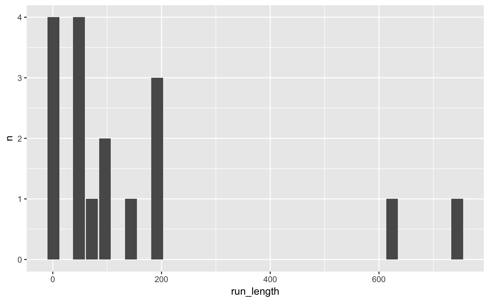
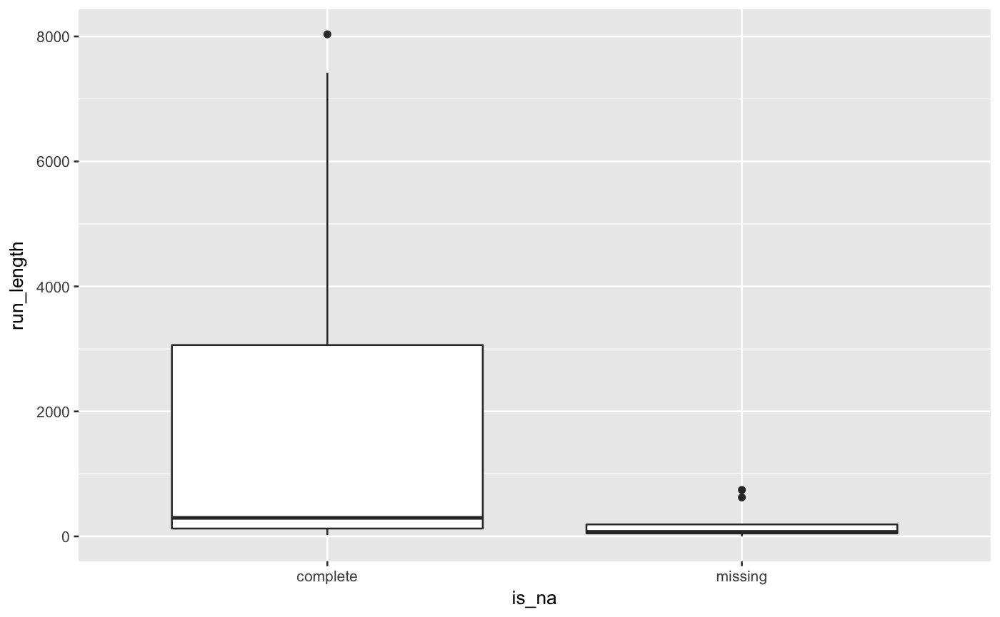

In time series it can be useful to determine the number of missing values that occur in a single run. This function `miss_var_run` returns a dataframe with the column names "run_length" and "is_na", which describe the length of the run, and whether that run describes a missing value
miss_var_run(data, var)
| data | data.frame |
|---|---|
| var | a bare variable name |
dataframe with column names "run_length" and "is_na", which describe the length of the run, and whether that run describes a missing value.
library(ggplot2) library(dplyr) # explore the number of missings in a given run miss_var_run(pedestrian, hourly_counts) %>% filter(is_na == "missing") %>% count(run_length) %>% ggplot(aes(x = run_length, y = n)) + geom_col()# look at the number of missing values and the run length of these. miss_var_run(pedestrian, hourly_counts) %>% ggplot(aes(x = is_na, y = run_length)) + geom_boxplot()